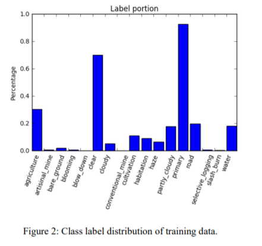
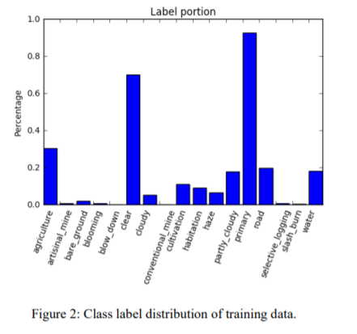

Multi-label classification
can be interpreted as a ranking problem, where the authors combine a ranking objective with a
convolutional neural network to beat prevalent benchmarks.
Recent work has demonstrated the possibility of using Recurrent Neural Networks coupled with Convolutional
Neural Networks for multi-label image annotation, using
approaches that can be compared to the task of image captioning. In recent years, especially since 2015,
training a deep neural network becomes easier with larger
computational power, bigger training datasets and better
image quality. Thus, convolutional neural network has
become a popular tool for satellite image analysis in many
areas of application, including image classification, land
use classification, pattern detection in urban
environment, solar power plant detection,
orthoimagery segmentation, nighttime sky/cloud
segmentation and face-like structure detection.
Also, with the emergence of large dataset with
high-resolution remote sensing (HRRS) imagery, different
neural network models have been created and tuned for
higher accuracy. Examples models such as traditional
neural network, deep convolutional neural network,
multi-channel pulse coupled neural network (m-PCNN)
and recurrent neural network, have all been used to
achieve a high accuracy on high-resolution satellite images.
For this project, I will mainly evaluate the performance of
deep convolutional neural networks on high-resolution
Amazon satellite images.
 
